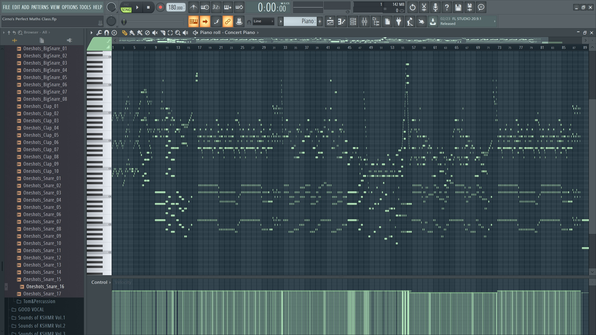
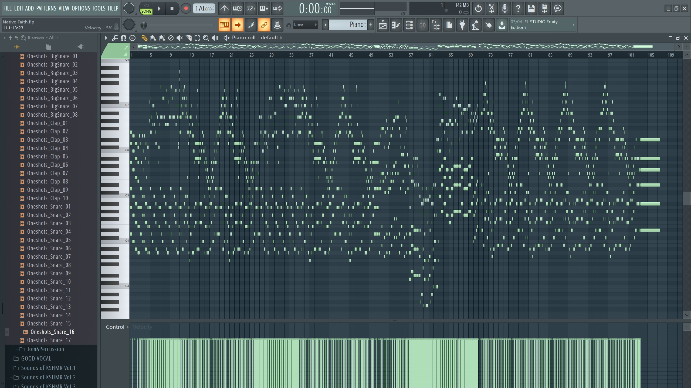

Produced by 3B (04) Lai Sheung Yuk Original Piece: La Campanella - Franz Listz Download Midi File Here
Produced by 3B (04) Lai Sheung Yuk Original Piece: Under Tides - Monster Siren Records Download Midi File Here
Produced by 3B (04) Lai Sheung Yuk Original Piece: Cirno's Perfect Math Class - IOSYS Download Midi File Here 
Produced by 3B (04) Lai Sheung Yuk Original Piece: Native Faith - Team Shanghai Alice Download Midi File Here 